00开考先认三样：变体 · 立场分布 · 七项的抓手 —— 本篇的主刀是「立场全同，比抓手」
Directions 里那句 Read the following comments on a report about ＋ Choose the best statement from the list A—G for each numbered name ⟹ 观点匹配（R32）：一人一项，七项选五，两项多余。这是十八年里观点匹配第二次出现，上一次就在两年前（2022 动物园之辩）——两篇放一起看，打法差在一个地方：2022 能按立场分堆，2024 不能。
① 两篇观点匹配：同一个变体，两种分法
| 年份 | 评论的对象 | 五人立场 | 多余项 | 能用的第一刀 |
|---|---|---|---|---|
| 2022 | 埃玛·马里斯「动物园该不该存在」的观点 | 反对 1 · 中间 1 · 支持 3——立场分散 | B、E 都是无人提及 | 先给每人贴「支持／反对／中间」，再按立场分堆 |
| 2024 | 《纽约时报》报道：美国博物馆正在归还盗掘文物（评论区） | 五个人全站「该还」——Buck 的复制品方案以归还为前提，Sara 只加了个条件「来路要正」 | A、D 无人提及 · 方向反 | 立场一刀切不开 ⟹ 给每人、每项贴「论证抓手」（他拿什么理由说话），抓手一一对上 |
⟹ 七项里也只有 A 不表态，其余六项全站「该还」一边（B 驳反对者 · C 还了也不耽误学 · D 替原件说话 · E 价值在原属国 · F 来路要正 · G 安保不是借口）。立场标签在这里一个都排除不掉；能排除的是「这个人拿什么说事」——Hannah 讲价值、Buck 讲复制品、Sara 讲来路、Victor 讲安保、Julia 讲对方的推理，五个抓手互不重叠。（⟹ R318）
② 先认七项：给每一项贴一个抓手（读选项只要 1 分钟）
| 项 | 抓手（话题） | 方向 | 扫读时该记下的一点 |
|---|---|---|---|
| A | 赔偿（钱） | 不表态 | compensated——记住这个词，读五段时看谁提到赔偿 |
| B | 别人的推理（元论证） | 驳反对者 | 它不谈文物本身，谈「反对归还的那套推理」⟹ 要找一个有对手的人 |
| C | 复制品 | 正：照样学得到 | C、D 是七项里唯一共用一个抓手的一对，而且方向相反 ⟹ 最多只有一个是答案，另一个多半是多余项 |
| D | 复制品 | 反：替代不了 | |
| E | 价值在哪儿 | 只在原属国 | only … rather than anywhere else 绝对口气——先别急着划 |
| F | 取得方式 | 要正当合法 | Ways to get——找谈「怎么来的」的人 |
| G | 安保 | 不是借口 | is no excuse 要上文先有「有人拿安保当理由」⟹ 找一个先让步、再反驳的人 |
③ 做题顺序：抓手最硬的先落
| 步 | 动作 | 本篇怎么走 |
|---|---|---|
| 1 | 七项贴抓手 | 如上表；顺手标出 C／D 这一对、A 这个「钱」字 |
| 2 | 每人找「和别人不一样的那一句」 | 五人都说该还 ⟹ 「该还」那句不用看；看转折后（Sara ④ Having said that · Victor ⑤ But）、重复两遍的（Buck ⑤ Again）、最绝对的（Hannah ④ no … except）、反问的潜台词（Julia） |
| 3 | 原词最硬的三个先落 | Victor ④ security → G；Buck ①② reproductions → C 或 D，按方向定 C；Sara ④ on loan, legally purchased → F |
| 4 | 剩 Hannah、Julia 配 B、E、A | Julia ❶ 点名评论区对手、四句反问 → B；Hannah ④ 在美国只是稀奇物件 → E |
| 5 | 验多余 | A：五段里找 compensat- 一个都没有（无人提及）；D：正撞 Buck（方向反）⟹ 两项都说得出理由，收工 |
④ 背景 6 行（只帮你认话题，不帮你判选项）
| 名字 | 是什么（WebSearch 核） |
|---|---|
| 那篇报道 | 《纽约时报》2022-12-13，作者 Graham Bowley：美国博物馆在执法部门推动、外国政府施压下加快归还盗掘文物；标题借「夺宝奇兵」印第安纳·琼斯说「那个时代结束了」 |
| 史密森 · 贝宁青铜器 | 史密森学会国立非洲艺术博物馆 2022-10-11 把 29 件贝宁青铜器的所有权交还尼日利亚国家博物馆与古迹委员会（Hannah ①、Julia ❶） |
| 贝宁王国 | 在今尼日利亚南部（不是今天的贝宁共和国）；1897 年英军洗劫其都城，铜器散入欧美博物馆 |
| 埃尔金石雕 | 帕特农神庙的大理石雕刻，19 世纪初被埃尔金伯爵运到英国，藏大英博物馆；希腊长期索还（Julia ❷ 的伦敦 vs 雅典） |
| 加德纳博物馆失窃 | 1990 年波士顿伊莎贝拉·斯图尔特·加德纳博物馆失窃 13 件（维米尔、伦勃朗、马奈、德加等），估值 5 亿美元以上，至今未破（Victor ⑤） |
| 气候抗议者泼画 | 2022 年 10–11 月起，伦敦（梵高《向日葵》番茄汤）、波茨坦（莫奈《干草堆》土豆泥）、罗马（梵高《播种者》）等地接连发生；画有玻璃罩、未损（Victor ⑦） |
01七条概括（A–G · 本机识别成文字）· 每项一行「意」，一行「抓手」，一行「归位」
📄 七项由你的浏览器从原卷第 12 页识别成文字（选中任意单词弹「查有道」）｜ 🔑 一行 ＝ 这一项谈的是什么、方向往哪边 ｜ 紫色标签 ＝ 它最终落在谁身上（作答后对应项会自动置灰）｜ 红框 ＝ 多余项
02五位评论者 · 点字母作答
📄 五段评论由你的浏览器从原卷第 11–12 页识别成文字（页首「原卷对照」可切回扫描图）｜ 选中任意单词弹「查有道」 ｜ 虚线句 ＝ 05 节有长难句精析，点一下跳过去 ｜ 虚线词 ＝ 本句重难点词，点开出卡片 ｜ 每人下方点 A–G 作答，答后人名下方补上该项原句，并出线索链解析 ＋ 错因标签 ｜「意」＝ 按句意转述，非逐字翻译
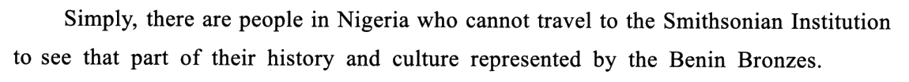
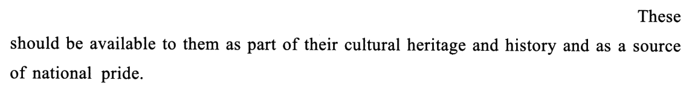
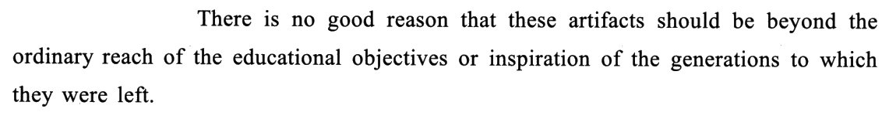
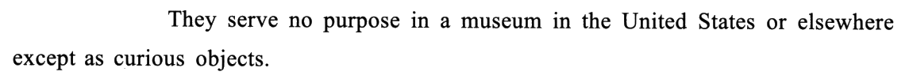
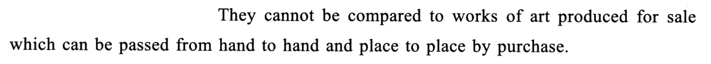
⟶ 这一段的概括：(41) ＿＿＿＿ 点下方字母作答
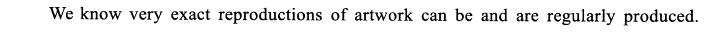
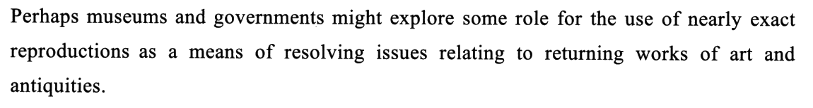
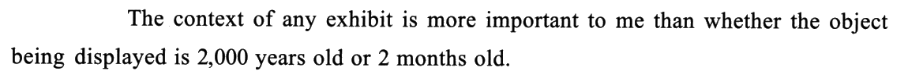
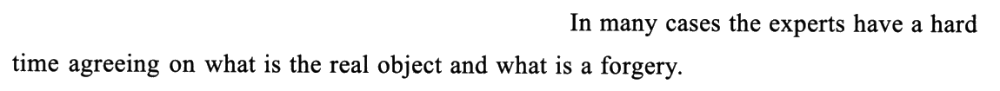
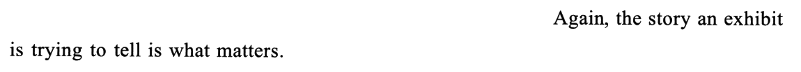
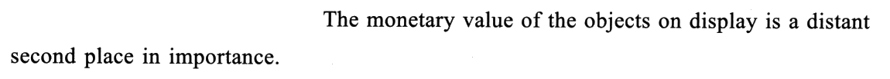
⟶ 这一段的概括：(42) ＿＿＿＿ 点下方字母作答
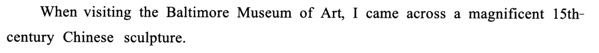
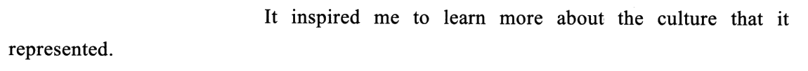
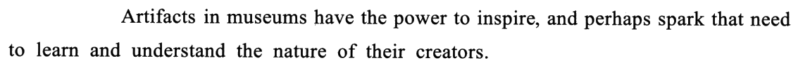
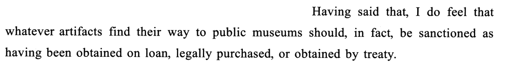
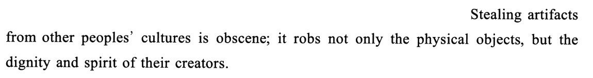
⟶ 这一段的概括：(43) ＿＿＿＿ 点下方字母作答
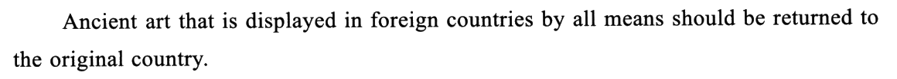
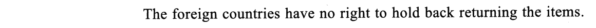
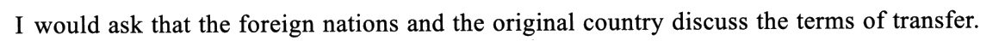
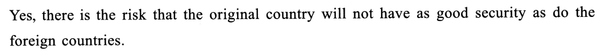
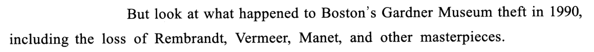
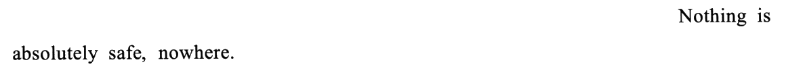
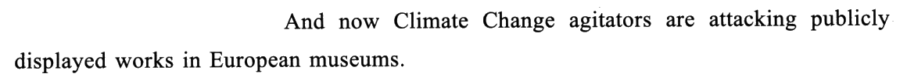
⟶ 这一段的概括：(44) ＿＿＿＿ 点下方字母作答
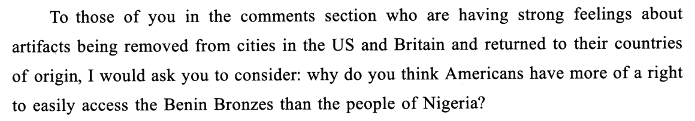
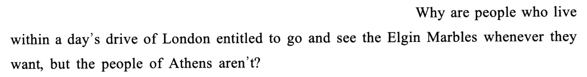
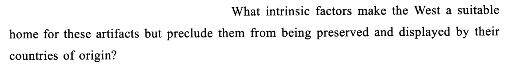
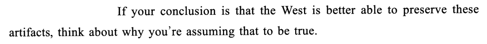
⟶ 这一段的概括：(45) ＿＿＿＿ 点下方字母作答
02+本页最值钱：五个抓手 —— 立场全同的时候，比「他拿什么说话」
抓手 ＝ 这个人支撑观点用的那件事（价值、复制品、来路、安保、对方的推理）。立场回答「该不该还」，抓手回答「凭什么」——五个人对前一个问题答案一样，对后一个问题答案全不一样。
| 人 | 抓手 | 抓手词（原文） | 选项 | 同抓手的诱饵 |
|---|---|---|---|---|
| 41 Hannah | 价值在哪儿 | ② cultural heritage · national pride ／ ④ serve no purpose … except as curious objects | E | —（「价值」只有 E 谈） |
| 42 Buck | 复制品 | ① ② reproductions · ④ a forgery · ③⑤ context／story 才重要 | C | D（同抓手、方向反） |
| 43 Sara | 取得方式 | ④ on loan, legally purchased, or obtained by treaty · ⑤ Stealing artifacts … is obscene | F | A（stolen 借了 ⑤ 的原料） |
| 44 Victor | 安保 | ④ as good security as · ⑤ theft · ⑥ Nothing is absolutely safe | G | A（stolen 借了 ⑤ theft） |
| 45 Julia | 对方的推理 | ❶ To those of you in the comments section · ❹ If your conclusion is … assuming | B | G（❹ 的 preserve ≈ 安保） |
⟹ 五个抓手互不重叠，七项里五项各占一个，剩下两项：一个抓手是空的（A 的「赔偿」五个人都没碰），一个抓手撞了车（D 和 C 抢 Buck，方向还反了）。观点匹配的多余项就这两种来路：要么没人说过，要么有人说过、但说的是反话。
为什么 2022 那把「立场刀」到 2024 就钝了
| 年份 | 五人立场 | 七项立场 | 立场刀能砍掉几项 |
|---|---|---|---|
| 2022 | 反对 1 · 中间 1 · 支持 3 | 反对动物园、支持动物园、中立的都有 | 每人先排掉一半，立场就是第一刀 |
| 2024 | 五人全站「该还」 | 六项站「该还」、A 不表态 | 一项都砍不掉（连多余项 D 也是替原件说话、站在「该还」边上的） |
⟹ 认变体之后还要认「立场分布」：五人立场分散 ⟹ 先按立场分堆（2022）；五人一边倒 ⟹ 立场标签全一样、等于没贴，直接按抓手配（2024）。开考扫一遍五个人的第一句就知道是哪种——2024 五个第一句里没有一个说「不该还」。
02++观点句在哪：五个人五种落点 —— 选项概括的是「他和别人不一样的那一步」
| 人 | 段落结构 | 观点句 | 选项概括的是哪一步 |
|---|---|---|---|
| 41 Hannah | 五句一路递进：可及 → 归属 → 用途 → 价值 → 性质，无转折 | ④（最绝对的一句：no … except） | E ＝ ② ＋ ④：价值对本国人才成立 |
| 42 Buck | 提案（①②）→ 理由（③④）→ Again 重申（⑤）→ 补一句钱（⑥） | ② 提案 ＋ ⑤ 重申 | C ＝ 提案（还原件、留复制品）＋ 理由（照样学得到） |
| 43 Sara | 让步（①–③ 文物能启发人）→ Having said that 转折（④⑤） | ④ | F ＝ 转折之后；让步部分没有出选项 |
| 44 Victor | 立场（①–③）→ Yes 让步（④）→ But 反驳（⑤–⑦） | ④–⑦ | G ＝ 让步 ＋ 反驳那一组；①–③ 的立场句反而没用上——五个人都说该还 |
| 45 Julia | 三个反问（❶–❸）→ 假设 ＋ 祈使（❹） | 全段的「动作」 | B ＝ 她在做什么（拆对方推理），不是她说了什么 |
⟹ 五个人共有的那句「该还」，从来不单独出一个选项（出了也配不上唯一的人）；每个选项都落在这个人独有的那一步上。所以读每段时，别停在第一句的立场上——Victor 的立场句明明白白写在 ①，答案却在 ④ 以后。两个让步结构（Sara 的 Having said that、Victor 的 Yes … But）和阅读里的规律一样：让步那半不出题，转折后才是本人的话（⟹ R170）。
03两个多余项：A 与 D —— 一个没人说过，一个有人说过、说的是反话
| 项 | 看起来能去哪 | 为什么不行 |
|---|---|---|
| A | 43 Sara（⑤ Stealing artifacts，④ loan、purchased 带钱味）· 44 Victor（⑤ theft、loss） | ① 无人提及：compensat- 在五段里一次都没出现；Buck ⑥ 谈的 monetary value 是展品值多少钱，不是赔谁；② 原料拼接：stolen 的原料是真的（两个人都讲到偷），「赔偿」是命题人加上去的（⟹ R39）；③ 不表态：七项里唯一不站队的一项，五个人却个个在表态 |
| D | 42 Buck（①② reproductions，④ the real object ↔ authentic objects） | ① 方向反：Buck 说真假不重要（④ 连专家都分不清、③ 两千年和两个月一样），D 说复制品替不了真品——话题对、方向反；② 原词照搬：D 用的正是 Buck 的原词 Reproductions，C 反而换成了 copies——原词多的那项是反的（⟹ R81）；③ 五人里也没有第二个谈复制品的人可以接住它 |
📊 十八篇 Part B 的多余项造法总账
| 年份 | 变体 | 多余项 | 造法 |
|---|---|---|---|
| 2007 | 标题匹配 | A、G | 两项都有词面呼应（A ↔ 首句 role models，G ↔ responsible 连出两次） |
| 2008 | 选句填空 | B、F | B 阶段错位（属于末段之后）· F 与正确项 E 撞专名 |
| 2009 | 选句填空 | D、F | 同属功能论一区，而那一区没有空 |
| 2010 | 排序 | C | 复现词最多，却偏离主线 |
| 2011 | 排序 | — | 零多余项（7 格 7 项） |
| 2012 | 选句填空 | B、E | B 先用后定义（属于末段之后）· E 缺前提的 thus（正确项 G 的下家）；两项都有词面呼应 |
| 2013 | 选句填空 | A、D | A 推测句要 B 的数据（正确项 B 的下家）· D 同区换杠杆；两项都有词面呼应 |
| 2014 | 排序 | — | 零多余项（7 格 7 项）；诱饵换成「位置可挪」 |
| 2015 | 选句填空 | D、F | D 逆箭头（退回作者本意）＋ 位置满 · F 换主角 ＋ 人称不符 ＋ 词面 |
| 2016 | 标题匹配 | A、C | A 话题词冒充段落词 · C 全文零出现的心态口号；两项都比正确项「大」 |
| 2017 | 排序 | — | 零多余项；诱饵是「同一阶段的两段」：E、A 都在写作起步 |
| 2018 | 排序 | — | 零多余项；诱饵是「尾首复现」：C 末 historic events ⟶ D 首 historical events |
| 2019 | 排序 | — | 零多余项；诱饵是「同词镜像」：F ⑤ ⟶ A ①，一段诱饵两个假位置 |
| 2020 | 标题匹配 | B、F | 去条件／全称化：B instinctively、F Most people——全文每条发现都带条件；两项都有词面呼应 |
| 2021 | 选句填空 （带小标题） | A、C | A 撞主旨（replaces 正撞 without replacing，方向反）· C 无说话人（企业口吻，教授的嘴） |
| 2022 | 观点匹配 | B、E | 没有人说过的话（无人提及型）；E 还偷换了主语 |
| 2023 | 排序 | — | 零多余项（第六次；八段给定三段）；诱饵是 C——和给定段 H 同讲照片的作用，想挨着放 |
| 2024 | 观点匹配 | A、D | A 无人提及（stolen 原料真、赔偿是加的）· D 方向反（与正确项 C 共用「复制品」抓手，正撞 Buck；还照搬了原词 Reproductions） |
⭐ 多余项六族：①「词面像」——2007 A／G · 2008 F · 2010 C · 2012 B、E · 2013 A、D · 2015 F · 2016 A · 2020 B、F · 2021 C · 2024 D（照搬原词）；②「位置满」——2008 B · 2009 D／F · 2012 B、E · 2013 A、D · 2015 D；③「方向反」——2015 D · 2020 B · 2021 A · 2024 D；④「大而空」——2016 A、C；⑤「去条件」——2020 B、F；⑥「无人提及」——2022 B、E · 2024 A（观点匹配的专属造法：五个人说的话就是全部证据，没人说 ＝ 出局）。
03+🔍 与黄皮书交叉核对：答案零书误，排除理由商榷三处、字数一处
| 题 | 黄皮书主证据（备选项） | 本页补充 / 商榷 |
|---|---|---|
| 41 E | E 是 ④ serve no purpose … except as curious objects 的同义转述（备选 B、E） | 同。商榷一：书排 B 的理由是「选项侧重思维有误，本段侧重行动有误」——太虚。硬判据是 B 要一个被拆的推理（一个对手）：Hannah 全段正面立论，没提任何人；对手只在 Julia ❶ 出现（R319） |
| 42 C | 先观点（复制品解决归还争议）后理由；originals are returned ↔ ② 隐含建议（备选 C、D、E） | 同。商榷二：书说巴克认为复制品「在金钱价值上比不上原件、但在教育价值上并不亚于原件」——⑥ 只说展品的金钱价值排第二，没有拿复制品和原件比钱，前半句是书的推论。补：⑤ 的 Again 是观点句路标 |
| 43 F | Having said that 引发转折；decent and lawful 概括 ④ 的取得方式（备选 A、F） | 同。补：decent 管 ⑤（obscene 的反面，道德）、lawful 管 ④（legally／by treaty，法律）——F 一个词对一句 |
| 44 G | ①–③ 观点 → ④ Yes 让步 → But 转折（备选 B、G） | 同（排 B 的理由与 41 相同，见商榷一）。补：G 概括的是 ④–⑦，①–③ 的立场句五人都有、配不出选项 |
| 45 B | 前三句反问、末句「假设 ＋ 祈使」（备选 B、G） | 同。商榷三：书排 G 用「正面说明 vs 侧面说明须归还」——也虚。更硬：G 是「承认安保顾虑、再说它不是借口」，Julia 是「连『西方更会保存』这个前提都不认」；且 security 是 Victor ④ 原词，G 已归 44（一项一人） |
| 字数 | 书标 669 words | 脚本逐框计：评论 575 词 ＋ 七项 107 词 ＝ 682（＋五个人名 687）；单算评论也不是 669。差多少、差在哪，没找到，照实写 |
⟹ 黄皮书的「选项推测 → 锁定答案 → 排除干扰」三步走，备选项列得很全（42 甚至列了 C、D、E 三项），这对考场很有用：每题先想「哪两三项会来抢」，再说出每项输在哪个词上，比直接找答案稳。排除理由里的「侧重思维 vs 侧重行动」「正面 vs 侧面说明」两种说法，本页都换成了能落到原文的判据。
04Part B 分诊表：四种变体 · 十八篇实做（开考三十秒先认变体）
| 变体 | Directions 里的原话 | 考什么 | 打法与用时 |
|---|---|---|---|
| 选句填空 2008 · 2009 · 2012 · 2013 · 2015 · 2021 | some sentences have been removed … two extra choices | 衔接与连贯 | 认线 → 先找一把「分区刀」（人称、引号）→ 定空的形态 → 段中空先读下一句、段末空看小标题或下一段首句 → 剩下两项问「是不是撞了主旨、是不是没人说这句话、是不是某个答案的下家」。6–8 min，能自查 |
| 标题匹配 2007 · 2016 · 2020 | choose the most suitable heading／subheading | 段落概括 | 看七项句式：祈使句 ⟹ 每段一条建议；陈述句 ⟹ 每段一条发现 → 用覆盖表验 → 剩下两项问「是不是总话题」或「是不是把条件删了」。5–8 min |
| 观点匹配 2022 · 2024 | comments on … a list of statements … for each numbered name | 立场 ＋ 抓手 | 先扫五人第一句认立场分布：分散（2022）⟹ 按立场分堆；一边倒（2024）⟹ 给每人、每项贴抓手，一一对 → 每人只看「和别人不一样的那一句」（转折后、重复两遍的、最绝对的、反问的潜台词）→ 剩两项问「有没有人说过」「是不是某人观点的反面」。6–8 min，不能自查，但多余项都说得出理由 |
| 排序题 2010 · 2011 · 2014 · 2017 · 2018 · 2019 · 2023 | reorganize these paragraphs into a coherent text | 篇章顺序 | 先数格子（有无多余项）→ 认文体 → 给每格数候选，被已给定段锁死的先做 → 通读验闭合。7–10 min，能自查 |
📊 十八篇战绩：2007 标题 5/5 · 2022 观点 5/5 · 2008 选句 5/5 · 2009 选句 3/5 · 2010 排序 5/5 · 2011 排序 5/5 · 2012 选句 5/5 · 2013 选句 5/5 · 2014 排序 5/5（不计完整盲做）· 2015 选句 5/5（计入 4/4）· 2016 标题 5/5 · 2017 排序 5/5（不计完整盲做）· 2018 排序 5/5 · 2019 排序 5/5 · 2020 标题 5/5 · 2021 选句 5/5 · 2023 排序（非盲，不计）· 2024 观点 5/5（✅ 完整盲做）。两篇观点匹配 10/10；十八篇里唯一的翻车仍是 2009 选句填空（没认线）。
分诊：如果你错了，错在哪一刀
| 错法 | 你当时大概是怎么想的 | 漏掉的那一刀 |
|---|---|---|
| 41 选 B | ③ no good reason 和 flawed line of reasoning 字面很像 | 元论证要对手：B 拆的是别人的推理，Hannah 没提任何人（R319） |
| 42 选 D | D 里有 Buck 的原词 Reproductions，C 里一个原词都没有 | 同抓手看方向：C、D 一正一反，Buck 说真假不重要（R318）；原词多的那项反而是反的（R81） |
| 43 选 A | ⑤ 讲偷，④ 讲借和买，A 的 stolen 和「钱」都对得上 | 无人提及：compensat- 全文没有；两头原料都真，组合是假的（R39） |
| 43 选 E／C | ①–③ 说博物馆里的文物能启发人，以为她支持「留在博物馆」 | 让步不出题：Having said that 之后才是她的话（R170） |
| 44 选 B | ② have no right to hold back，像在驳反对归还的人 | 驳行为 ≠ 驳推理；且 Victor 独有的一步在 ④ Yes … ⑤ But（安保） |
| 45 选 G | ❹ 西方更会保存 ≈ 安保做得好 | 质疑前提 ≠ 驳倒理由；security 是 Victor 原词，G 已归 44 |
| 45 选 E | ❶ 又是贝宁青铜器、尼日利亚，和 Hannah 一模一样 | 同话题 ≠ 同抓手：首尾两人谈同一批文物，Hannah 谈价值、Julia 谈推理 |
⟹ 本篇新加两张套路卡：R318（立场一边倒 ⟹ 按抓手配）与 R319（元论证选项只配给有对手的人）；其余几刀都是旧卡（R39 原词拼接 · R81 词面呼应最多的是多余项 · R170 让步不降档）。
05长难句精析（11 句 · 本篇黄皮书无此栏目，全部原创 · 原句看句条）
评论区的文字是口语化的议论：句子不算太长，难在省略（Buck ① 两个助动词共用一个分词、⑤ 省关系代词、Julia ❷ but 后省一大截）和倒装（Victor ④ as … as do …）。原句由浏览器识别成文字，分析里只引短语。
06可搬进作文的素材（本篇是「文化遗产 / 归还与归属 / 驳论」三个话题的弹药库）
例句全部自拟，只借原文的句式骨架。
🔁 同卷呼应：2024 T3（艺术家反击 AI 文生图）讲的是「未经许可拿走别人的作品」——和 Sara ⑤「偷走的不只是实物，还有创作者的尊严」是同一个道理，作文写「知识产权／尊重原创」时两篇可以并用：一篇是今天的数字作品，一篇是几百年前的文物。2024 T1 首句的 a curious treasure 与 Hannah ④ 的 curious objects 同一个义项（稀奇的）。
07词汇复盘（点卡片看详情 · 共 张，含 21 处熟词僻义）
本篇熟词僻义的共同规律：博物馆场景把日常词全换了意思——reproduction 是「复制品」不是「繁殖」、exhibit 是「展品」、curious 修饰物是「稀奇的」、sanction 是「认可」（另一个意思恰好相反：制裁）、on loan 是「借来展出」、terms 是「条件」、peoples 是「各民族」、obscene 在评论里是「可憎的」。最危险的是 by all means：它和 by no means 只差一个词，意思完全相反。